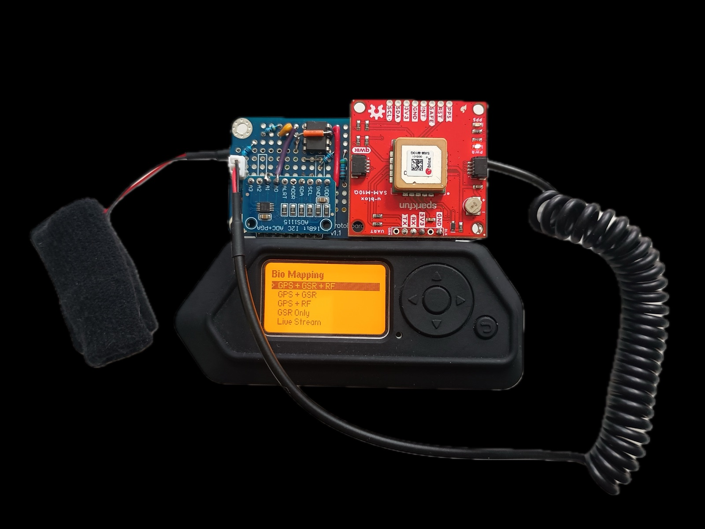

The hardware
What it does
When something startles you your skin sweat level changes very slightly — often wihtout you noticing. Bio Mapping measures this as you walk and pins each moment to the map.
Since 2004, thousands of people in sixteen countries have made emotion maps with Bio Mapping.
An open, playful tool for communities, planners and artists to explore how places feel.
Click anywhere to find out more →
Imagery © Esri, Maxar, Earthstar Geographics · Buildings © OpenStreetMap contributors · CesiumJS